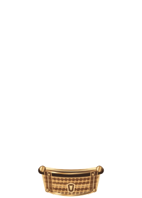
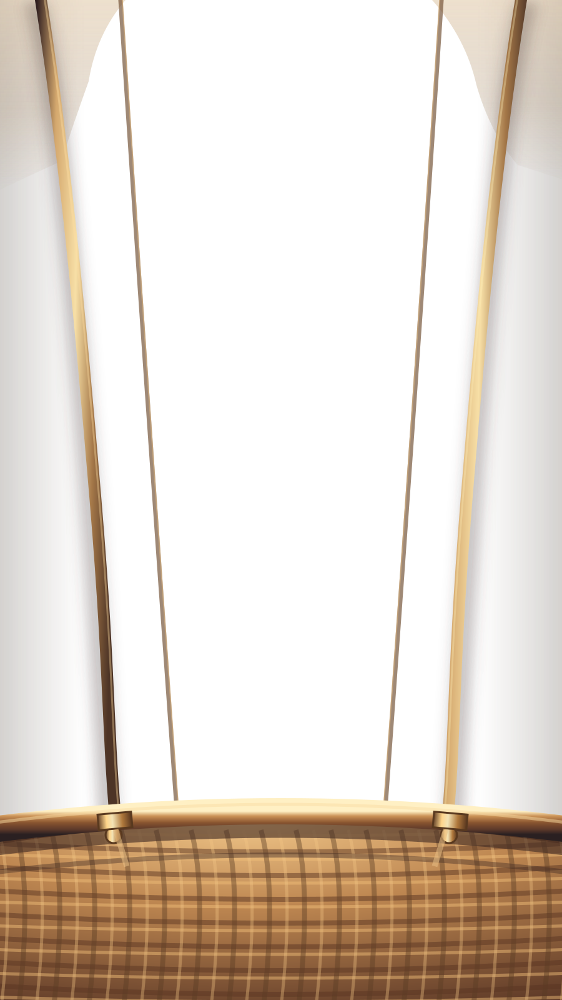

Seguimos entre las nubes
Las calles reales de Madrid nos guían.
Tu recorrido✧
Las calles reales de Madrid nos guían.



Edificios y calles de verdad, vistos desde el globo. La magia ilumina la ciudad sin cambiar su arquitectura.

Hemos sobrevolado calles y edificios reales. Los últimos metros hasta casa son un secreto.